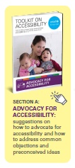
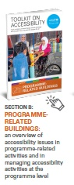
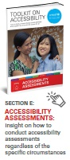
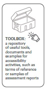

Acknowledgements
This toolkit was developed by the UNICEF Disability Team, based in the Programme Group Leadership Team at New York Headquarters. It was prepared in close consultation with persons with disabilities, and through consultations and collaboration with accessibility specialists, UNICEF staff and other partners around the world.
The core team at UNICEF included Gopal Mitra (currently serving as Senior Officer at the United Nations Disability Strategy Secretariat, Executive Office of the Secretary- General, United Nations), Megan Tucker and Anna Burlyaeva. The toolkit was developed under the supervision of Rosangela Berman Bieler, Senior Adviser and Chief, Disability Section, UNICEF.
Colleagues from UNICEF country and regional offices and various headquarter divisions contributed substantially to the development of this toolkit. Thanks go to Carlos de la Espriella, Katinka Rosenbom, Ignacio Giménez, Kirstin Lange, Ahmed Ghanem, William Abi Abdallah, Heidy Martinez, Shirin Kiani and Besan AbdelQader.
UNICEF consultants with expertise in disability-inclusion, communication, accessibility and urban planning provided key input into the document, including Renata Zanetti, Daisuke Arao, Jens Aerts and Erika Trabucco, on behalf of Humanity and Inclusion.
3
An original draft that substantially informed this toolkit was created by the Global Alliance on Accessible Technologies and Environments (GAATES), led by past president Betty Dion, with Bob Topping, LoriAnn Girvan and Marnie Peters, and the GAATES project team: Abdul Zazai, Vashkar Bhattacharjee, Chuck Letorneau, Mathew Fleet, Anjlee Agarwal, Aqueel Qureshi, Erin O’Herlihy, Aqueel Qureshi, Deepak KC and Janett Jimenez.
Thanks also to conversations and interviews with the Disability-Inclusive and Accessible Urban Development (DIAUD) Group, which included Stig Langvad, Benjamin Dard, Kathy Kline, Lisa Stafford, Mano Karan and Megan Smith during the ninth World Urban Forum in Malaysia, which also informed the toolkit.
© United Nations Children’s Fund (UNICEF) February 2022
Permission is required to reproduce any part of this publication. For more information on usage rights, please contact:
Disability Section, UNICEF
3 United Nations Plaza
New York, NY, 10017, USA
Email:
disabilities@unicef.org
In addition to the PDF version, the toolkit is also available in a range of accessible formats: EPUB, Braille-ready file and accessible HTML.
Cover photo: © UNICEF/UN0503550/Willocq
A mother proudly introduces two of her six children at the the Alida Arana Special Education Center for children with disabilities, supported by UNICEF, in the city of Guatemala. She attends stimulation classes twice a week with her son who suffers from microcephaly due to Zika virus.
Feedback and comments: This toolkit is a living document that will be updated and revised as it is used in the field to support UNICEF’s work on accessibility and inclusion of children and adults with disabilities. UNICEF colleagues and partners are invited to send feedback:
Email:
disabilities@unicef.org
Editor and copy editor: Fabienne Stassen, Edit Or Proof
Layout and graphic design: Big Yellow Taxi, Inc.
Web designer: Elias Constantopedos
Illustrator: Foteini Korre
Accessible formats: Prashant Ranjan Verma
4
Toolkits on accessibility
The toolkit is divided into seven sections and one Toolbox:

SECTION A: ADVOCACY FOR ACCESSIBILITY: suggestions on how to advocate for accessibility and how to address common objections and preconceived ideas

SECTION B: PROGRAMME RELATED BUILDINGS: an overview of accessibility issues in programme-related activities and in managing accessibility activities at the programme level
SECTION C: ACCESSIBILITY IN EMERGENCIES: an overview of how accessibility should be taken into account in emergencies and disaster preparedness
SECTION D: UNICEF AND UNITED NATIONS COMMON PREMISES: support for managing accessibility improvements in UNICEF offices around the world

SECTION E: ACCESSIBILITY ASSESSMENTS: insight on how to conduct accessibility assessments regardless of the specific circumstances
SECTION F: ORGANIZATION OF ACCESSIBLE EVENTS: suggestions on how to organize accessible events
SECTION G: ACCESSIBILITY CHECKLISTS: 17 checklists to use during accessibility assessments

TOOLBOX: a repository of useful tools, documents and examples for accessibility activities, such as terms of reference or samples of assessment reports
5
Foreword
Dr Omar Abdi, UNICEF Deputy Executive Director, Programmes:
UNICEF works across more than 190 countries and territories, promoting the rights and wellbeing of every child in everything we do. UNICEF advocates for and supports governments to create enabling environments and equal opportunities for all children to survive and thrive, including the over 240 million boys and girls with disabilities living in the world today.
Our work on disability inclusion is mandated by the UN Convention on the Rights of the Child (CRC) and the UN Convention on the Rights of Persons with Disabilities (CRPD) and aligned with the UN Disability Inclusion Strategy (UNDIS) and the UNICEF Strategic Plan. With the 2017 Executive Directive on Accessibility in Programme-Related Construction Activities (CF/EXD/2017-004), UNICEF reaffirms its commitment to ensure physical accessibility is a principle for all the infrastructure that is built through our programmes, including in humanitarian action.
This toolkit is a result of extensive consultations with UNICEF employees, partners and persons with disabilities. It’s a set of technical resources that will help our staff to promote and support accessibility and inclusion across our programmes and operations.
We invite UNICEF colleagues and partners to apply this guidance in their work, to ensure that construction related to our programmes, such as school buildings, health clinics, water and sanitation facilities, are free of environmental barriers.
Hannan Sulieman, UNICEF Deputy Executive Director, Management:
UNICEF is committed to promote an accessible and inclusive work environment for every employee and is investing to increase opportunities for persons with disabilities to join our workforce. This Accessibility Toolkit is an important resource to help us deliver on this commitment, respecting and promoting diversity, equity and inclusion in programmes and operations across the organization.
In 2014, a staff survey on accessibility of UNICEF programmes and premises revealed that 84 per cent of offices required awareness-raising materials and technical capacity on accessibility. In a follow-up All-Staff Survey in 2019, only 39 per cent of respondents deemed their office space was physically accessible for persons with disabilities.
To address the growing internal demand for resources to improve our office buildings, we established a Greening and Accessibility Fund, developed guidance to support renovations for environmentally friendly and accessible premises and set up the Environmental Footprint and Accessibility Assessment Tool (EFAAT).
Data as of 2021 shows us that 52 per cent of UNICEF premises meet “level 1”, the minimum organisational requirements for accessibility. But we can do better, and we must do better. UNICEF’s Strategic Plan Indicator E2.5 on Percentage of UNICEF offices that are disability inclusive and accessible, sets a target of 100% by 2025. This is an ambitious target, but for UNICEF’s 100% organizational commitment on disability inclusion, only a target of 100% of accessibility in our premises and operations can be acceptable.
6
Introduction to the toolkit
This toolkit was developed so the work of UNICEF programmes can support children like nine-year-old Amal, a girl with a physical disability who lives in Zaatari camp and who can now play with other children because the local playground has been made accessible to all. It can support children like Frinpali, a seven- year-old boy who uses a wheelchair and now receives appropriate education in Burkina Faso because his school has been made accessible. This toolkit has been conceived as an instrument to facilitate the dialogue with partners and the involvement of organizations of persons with disabilities (OPDs) on accessibility-related issues. And it has been developed with UNICEF’s current and future employees with disabilities and other organizations in mind, so that the facilities they work in are made more accessible and inclusive for all.

© UNICEF/UN0251366/HERWIG
Nine-year-old Amal plays on the seesaw in the new inclusive playground in her school in Zaatari refugee camp, Jordan where she is in third grade.
This Toolkit on Accessibility: Tools to apply universal design across premises and programmes and promote access for all was developed to help UNICEF programmes and operations to become more accessible. It facilitates dialogue with partners, including OPDs on accessible construction.

© UNICEF/UNI388930/DEJONGH
Frinpali, a 7 year old boy who is using a wheelchair, and his friend Hassan at the playground of their school in Fada, in eastern Burkina Faso.
8
Structure of the toolkit
The toolkit is divided into seven sections and one Toolbox:
-
Section A. Advocacy for accessibility: suggestions on how to advocate for accessibility and how to address common objections and preconceived ideas
-
Section B. Programme-related buildings: an overview of accessibility issues in programme-related activities and in managing accessibility activities at the programme level
-
Section C. Accessibility in emergencies: an overview of how accessibility should be taken into account in emergencies and disaster preparedness
-
Section D. UNICEF and United Nations common premises: support for managing accessibility improvements in UNICEF offices around the world
-
Section E. Accessibility assessments: insight on how to conduct accessibility assessments regardless of the specific circumstances
-
Section F. Organization of accessible events:suggestions on how to organize accessible events
-
Section G. Accessibility checklists: 17 checklists to use during accessibility assessments
-
Toolbox: a repository of useful tools, documents and examples for accessibility activities, such as terms of reference or samples of assessment reports
This Accessibility Toolkit offers information on how to build or adapt infrastructure both in UNICEF-supported programmes and in UNICEF premises, for use by all, including persons with disabilities. Its contents can also be applied to non-UNICEF construction processes and facilities as it takes into consideration international standards.
The guidance provided can be used to enhance and promote accessibility when planning and designing the new construction of programme facilities and infrastructure both in development and humanitarian contexts, and when upgrading or adapting existing infrastructure.
To summarize, information can be used at different points in the accessibility journey, such as:
9
-
Planning and designing UNICEF’s offices, guest houses and other buildings
-
Planning and designing programme-related facilities
-
Remodelling, renovating, extending or repairing UNICEF’s offices, guest houses and other buildings
-
Remodelling, renovating, extending or repairing programme-related facilities and premises
-
Selecting facilities for leasing, renting or hosting conferences and events
-
Managing and setting up humanitarian and emergency programmes
-
Preparing construction contracts and agreements
-
Monitoring and evaluating projects involving construction, renovation or repairs
-
Conducting accessibility assessments of existing facilities or premises
-
Advocating for accessibility with donors and partners
-
Developing a curriculum for trainings on accessibility or accessible construction processes
10
Target audience
While this toolkit is primarily for UNICEF employees involved in construction activities, operations focal points or programme colleagues in charge of construction, it can also be useful for UNICEF partners, other United Nations agencies, OPDs, non-governmental organizations, local authorities and other stakeholders.
This toolkit contributes to the implementation of the United Nations Disability Inclusion Strategy and helps to achieve and exceed most of the strategy’s indicators: lack of physical accessibility, specifically recognized as one of the barriers to inclusion in Indicator 6 on Accessibility, 6.1 on Accessibility of conferences and events, Indicator 7 on Reasonable accommodation and Indicator 5 on Consultation with persons with disabilities. The toolkit helps to report on United Nations Country Team scorecards and to build the capacity of implementing partners on accessibility.

© UNICEF/UN0427130/DEJONGH
Bilal Mohammed, 12, signs during his class in the Inclusive Education Program in Mora, in the Far North of Cameroon. He is in class 5 and his dream is to become a photographer.
11
Frameworks and approaches
Convention on the Rights of Persons with Disabilities
The Convention on the Rights of Persons with Disabilities (CRPD)
is an international human rights treaty of the United Nations intended to protect the rights and dignity of persons with disabilities. It was adopted on 13 December 2006 and describes human rights frameworks linked to accessibility, aspects of universal design, reasonable accommodation and international standards for accessibility. UNICEF’s existing commitments and policies to promote accessibility are aligned with the CRPD.
The accessibility of spaces and places determines the extent to which everyone – including persons with disabilities, older persons and children – can live, work and learn independently and participate fully and equally in society. Equal access to transportation, media, information and communication technologies, and public services and facilities, such as schools, libraries and town halls, facilitates the participation of persons with disabilities, in both urban and rural communities. Accessibility is also critical in emergency contexts, such as refugee camps, to ensure access to humanitarian services and facilities.
As of October 2021,184 countries have ratified the CRPD and, increasingly, countries around the world have adopted standards, codes and laws to mandate accessibility, in line with CRPD requirements.
Accessibility is one of the primary principles of the CRPD, set out in article 3 as a vital precondition for the effective and equal enjoyment of civil, political, economic, social and cultural rights for persons with disabilities, for example to health, education, information and communication. Other CRPD articles related to accessibility are article 9: Accessibility; article 19: Living independently and being included in the community; article 24: Education; and article 30: Participation in cultural life, recreation, leisure and sport.
Universal design
In the 1980s, the American architect Ron Mace coined the term ‘universal design’, which means good design that benefits everyone.
Universal design is defined in the CRPD as “the design of products, environments, programmes and services to be usable by all people, to the greatest possible extent, without needing adaptation or specialized design” (article 2).
12
Seven principles underpin the concept of universal design, summarized as follows:
-
Equitable use: Providing the same means of use for all users, with and without disabilities
-
Flexibility in use: Accommodating individual preferences and abilities, such as left- or right-handedness
-
Simple and intuitive use: Ensuring easy to understand utilization, including for people with low literacy
-
Perceivable information: Communicating key information clearly and in multiple ways
-
Error tolerance: Minimizing hazards and adverse consequences of accidental actions
-
Low physical effort: Requiring little operating force to use
-
Size and space: Providing appropriate space for reach and use, if seated or standing
The outcome of using universal design is that environments, buildings and products are inclusive of, usable by and accessible to everyone, to the greatest possible extent, including children, adults and older persons with and without disabilities, pregnant women, parents with children or using baby strollers, and people carrying heavy equipment, suitcases, groceries, etc.
The concept of universal design applies to almost every area of life. While this toolkit focuses on the accessibility of infrastructure and spaces, the concept also applies to many other areas, programmes and services, such as mobility (e.g., accessible cars, buses or trains; inclusive bus stations; accessible communication on mobility-related web platforms), communication (e.g., inclusive events, sign language interpretation; meetings or lessons; easy-to-read publications; accessible posters) and information and communication technology (e.g., accessible web services and mobile apps; audiovisual content with captions and transcriptions; accessible files and software).
13
"Accessibility is one of the core elements of the United Nations Disability Inclusion Strategy. While it is emphasized in all four pillars, accessibility is included also in specific dedicated Indicator 6".
The accessibility continuum
The accessibility continuum is a concept that describes the experience of children, adults with disabilities and older persons departing from their homes, using pathways, crossing roads and taking transportation to reach, enter and use services and facilities. These facilities can be libraries, public meeting halls, sports fields, health care facilities, courthouses, marketplaces, conference rooms, office buildings, etc. A continuous route means that circulating through it is safe, unrestricted and possible using a wheelchair, a walking frame or a service dog, with no obstacles or barriers blocking the way. Such a route must be continuous because, like in a chain, if one link is broken, the chain is compromised.
Four steps ensure the accessibility continuum: reaching a facility; entering a facility; moving around a facility; and using specific features of a facility.
These align with the RECU methodology that stipulates that accessible facilities should be
easy to reach, enter, circulate and use.
Planning for an accessible environment requires a broad vision of the accessibility continuum perspective. For example, if the route from home to school is accessible for a child who uses crutches but there are stairs at the school entrance and classroom doors are hard to push and pull, the child will have difficulty entering the school or learning and participating in activities with his/her peers.
Similarly, if a UNICEF staff member using a wheelchair has an adjustable desk, an accessible work space with appropriate doorway sizes and accessible toilets, he/she will be able to work on an equal basis with others. However, if he/she is unable to independently access the building because there is no accessible parking space, drop- off zone or kerb (ramp) to get on the sidewalk, the overall accessibility of the workplace is compromised.
At least 10 common pitfalls can be avoided or remedied, often at low or no cost, to achieve an accessibility continuum.
14
They include the following:
|
Common pitfall
|
Plan or remedy
|
|
1. Doors are too narrow and the doorway cannot be entered by a standard or larger wheelchair
|
Design wide doors and/or change the latches on the doors to allow larger openings
|
|
2. Entrances have steps only
|
Install a ramp or consider a lifting platform
|
|
3. Ramps are installed but they are steep and unsafe
|
Consider going beyond the standards and applying recommended values for a gentle ramp slope (the less steep the better, even if local regulations allow steeper slopes)
|
|
4. Ramps are installed but key safety features are missing, with no landing space at the top or bottom to move/turn in a wheelchair, or without handrails or kerbs
|
Add appropriate handrails; make sure a flat, wide and sufficiently long square circulation or landing space allows room to safely open a door or create momentum to move up the ramp
|
|
5. An accessible typical building plan is used but the specifications have not been tailored to the actual context,so the slope is steeper or the entrance path is dangerously slanted such that a wheelchair could fall sideways or backwards
|
Always take the actual environment into consideration, even when using a ‘standard‘ building plan; the nature and topography of the area might affect the accessibility of the overall design
|
|
6. Accessible toilets exist but the door opens inwards instead of outwards, which takes up needed moving space
|
Make sure the toilet door opens outwards and that there is enough moving space in and around the bathroom
|
15
|
Common pitfall
|
Plan or remedy
|
|
7. Accessible toilets exist but they are used as storage space or kept locked, so they are unusable
|
Raise awareness of the need for accessible toilets to always be available, without needing to request access or having to move things out of toilets
|
|
8. The main building is accessible but the pathways leading to it are inaccessible/ unreachable or unsafe, for example, unmaintained or steep, or with stepped paths, slippery tiles or construction in or across the pathway
|
Remember that persons with disabilities must also be able to reach a building; create safe, continuous step-free paths and engage with urban planning officials and people who are blind to review the implemented designs and solutions
|
|
9. The pathway leading to the playground or office is accessible and safe but there is fixed furniture at arrival, so persons using a wheelchair do not have room to use the table or area
|
Use light furniture that can be moved easily or, where furniture is fixed, make sure that it meets measurements that allow comfortable access and usability, including for persons using a wheelchair or who are blind
|
|
10. The building, pathways and toilets are physically accessible for persons using a wheelchair but no clear, large signs indicate orientation, so the main buildings and features are difficult to identify and reach
|
Use clear, large-font, easy-to-read wayfinding signs with high visual contrast and pictograms to make it easy for people to navigate through venues and spaces without having to ask for assistance
|
Other considerations to promote inclusion include:
Welcoming, respectful attitudes – If a school is physically accessible but the teacher has a negative, discriminatory attitude and does not want to teach a child with a disability, unless the teacher’s attitude is changed, the child’s access to education will be limited. Attitudes can be improved through role models, interaction with other teachers and students with disabilities, experiential training or campaigns, and programmes to transform harmful social norms.
16
Culturally appropriate technical resources or assistive devices – If a school is physically accessible but a child with mobility impairments does not have a wheelchair to reach it, or if no pedagogical tools and assistive devices have been adapted to support children who are blind (such as Braille devices or screen-reading software), some children may not attend school at all. Some of these gaps can be filled through access to reasonable accommodation.
Technical accessibility standards
Many of the technical specifications in this toolkit are based on International Organization for Standardization (ISO) standards, developed by a committee of experts. In particular, ISO 21542:2011 ‘Building construction – Accessibility and usability of the built environment’ applies to construction and the modification of new and existing buildings and is available to UNICEF staff via the Supply Division.
Related ISO standards cover accessible lifts (4190-1), emergencies (22320), assistive devices such as tactile walking surface indicators (23599) and graphical symbols for public information and accessibility (7001). Some of the common global symbols used for accessibility are available in the Toolbox.
For UNICEF programmes, ISO 21542 can be applied to all construction-related activities. While dimensions in the standard are geared primarily towards adults, it also recognizes that people across age levels have different needs, so it incorporates, for example, accessibility in toilets designed for children. In addition, accessibility for children is considered in this toolkit based on other existing guidelines and principles.
Sustainable Development Goals
As part of the Sustainable Development Goal (SDG) framework,
accessibility of the built environment is referred to explicitly in the targets and indicators for:
Goal 4 – Ensure inclusive and equitable quality education and promote lifelong learning opportunities for all
Target 4.A – Build and upgrade education facilities that are child, disability and gender sensitive and provide safe, non-violent, inclusive and effective learning environments for all
17
Indicator 4.A.1 – Proportion of schools with access to (a) electricity; (b) the internet for pedagogical purposes; (c) computers for pedagogical purposes; (d) adapted infrastructure and materials for students with disabilities; (e) basic drinking water; (f) single-sex basic sanitation facilities; and (g) basic handwashing facilities

© UNICEF/UN0547488/MAWA
Nupur takes a computer course and regularly attends counselling services. She receives UNICEF funded Conditional Cash Transfers under the supervision of the Department of Social Services, Nilkamal Union, Char Fasson, Bhola, Bangladesh.
Goal 11 – Make cities and human settlements inclusive, safe, resilient and sustainable
Target 11.2 – By 2030, provide access to safe, affordable, accessible and sustainable transport systems for all, improving road safety, notably by expanding public transport, with special attention to the needs of those in vulnerable situations, women, children, persons with disabilities and older persons
Target 11.7 – By 2030, provide universal access to safe, inclusive and accessible, green and public spaces, in particular for women and children, older persons and persons with disabilities
In addition, Goal 6 (Ensure availability and sustainable management of water and sanitation for all) supports the principle of inclusion in the following targets:
Target 6.1 – By 2030, achieve universal and equitable access to safe and affordable drinking water for all
Target 6.2 – By 2030, achieve access to adequate and equitable sanitation and hygiene for all, and end open defecation, paying special attention to the needs of women and girls and those in vulnerable situations
18
New Urban Agenda
In 2016 during Habitat III, the United Nations Conference on Housing and Sustainable Urban Development, global leaders came together in Ecuador with local governments, mayors and constituency groups to establish the New Urban Agenda. The New Urban Agenda commits governments to promoting:
-
quality public spaces that are safe, inclusive, accessible and green
-
accessible and well-connected infrastructure
-
adequate investments in protective, accessible and sustainable infrastructure and service provision systems
The New Urban Agenda emphasizes the importance of process and implementation in a “participatory manner”, which considers “innovative, resource-efficient, accessible, context-specific and culturally sensitive sustainable solutions”.
In 2018, as a follow-on to the Habitat III conference, the World Urban Forum in Malaysia issued the Kuala Lumpur Declaration, with an explicit paragraph on universal design, committing governments to “adopt accessibility and universal design as core principles into national, subnational and local action plans for implementing the New Urban Agenda through inclusive, accessible and participatory processes and consultations”.
United Nations commitment to accessibility – UNDIS
During the twelfth Conference of States Parties to the Convention on the Rights of Persons with Disabilities, United Nations Secretary-General António Guterres launched the United Nations Disability Inclusion Strategy (UNDIS).
The policy establishes the highest levels of commitment and a vision for the United Nations system on disability inclusion for the next decade, and aims to create an institutional framework for the implementation of the CRPD and the 2030 Agenda for Sustainable Development, among other international human rights instruments and development and humanitarian commitments.
The accountability framework tracks the implementation of the policy for the entire system. It facilitates the assessment of progress and gaps in the work of the United Nations on mainstreaming disability inclusion with a view to advancing system-wide planning and action, promoting synergies and reducing duplication. The accountability framework comprises two related components: an entity accountability framework and
19
a United Nations country team accountability scorecard on disability inclusion. Each component includes a set of common system indicators focused on four core areas: leadership, strategic planning and management; inclusiveness; programming; and organizational culture.
Accessibility is one of the core elements of the UNDIS. While it is emphasized in all four pillars, accessibility is included also in a specific dedicated indicator.
UNICEF commitments to accessible programmes and premises
UNICEF executive directives
Two executive directives issued by UNICEF relate to disability and inclusion. The first, CF/EXD/2011-005 on disability, sets out the minimum requirements for the accessibility of UNICEF premises and procedures for employing staff with disabilities. A disability accommodation fund was also established by UNICEF to support staff with disabilities.
The second directive, the Executive Directive on Accessibility in UNICEF’s Programme- Related Construction Activities, was issued in December 2017 (CF/EXD/2017-004) to systematically address issues related to the accessibility of the physical environment in programmes. This directive requires UNICEF to adopt accessibility and universal design in all projects with governments and partners across all programme areas, and applies to all new construction, remodelling, extensions or repairs both in development and humanitarian contexts. As stated in the directive, “Accessibility is an enabler that allows children and adults with disabilities to enjoy their rights and entitlements. It is also a precondition for children and adults with disabilities to live independently and participate fully and equally in society”.
This executive directive supplements the existing requirements for the accessibility of premises in Property and Equipment Policy, Supplement 6 – Guidelines for Premises Management and the UNICEF Greening and Accessibility Fund (GrAF) procedures. The GrAF was established in 2015, generated by a 3 per cent air travel surcharge, with 2 per cent of the fund to be used to finance eco-efficiency projects and 1 per cent to be used for accessibility projects (see also Section D of the toolkit).
"Accessibility is an enabler that allows children and adults with disabilities to enjoy their rights and entitlements. It is also a precondition for children and adults with disabilities to live independently and participate fully and equally in society".
20
Advocacy for accessibility
UNICEF is in a strategic position to influence how accessibility is taken into account in development and emergency projects. In fact, as UNICEF collaborates with diverse stakeholders – including governments, United Nations agencies, donors, civil society, non-governmental organizations and academia – UNICEF staff members are well placed to advocate for accessibility of programmes and premises to promote the inclusion and participation of children and adults with disabilities.
Therefore, when working with implementing partners, UNICEF should reinforce the necessity for infrastructure accessibility in both development and humanitarian contexts, by making accessibility a requirement when working on new projects.
To be able to do so, UNICEF staff members must first become familiar with accessibility frameworks and principles, both internal and international, so their advocacy is informed, efficient and convincing.
SECTION A of this toolkit provides strategies to advocate for accessibility with stakeholders and partners (tips, FAQs) and arguments to reply to common objections and preconceived ideas (misconceptions).
© UNICEF/UN0276042/HERWIG
Children with disabilities, their parents and disability rights activists joined UNICEF in a Makani centre in Zarqa supported by UNICEF and run by the Ministry of Social Development.
22
Tips on promoting accessibility
TIP 1: Check whether the country has ratified the Convention on the Rights of Persons with Disabilities
Governments that have ratified the Convention on the Rights of Persons with Disabilities (CRPD) are legally bound to it because they have committed to implementing the Convention in their national laws and practice as well as to reporting on progress on accessibility as part of these commitments. The CRPD should be used as a basis for action on the part of government departments, civil society organizations, educators, school boards and municipalities. The status of ratification can be checked on
the United Nations CRPD portal.
UNICEF can raise the awareness of governments about accessibility (whether or not they have ratified the CRPD).

© UNICEF/UNI124314/SIDDIQUE
Shashwati Das, Head teacher, with Rabbi Mia, 8, a child with a physical disability at the Amtail Boys Government Primary School in Moulvibazar Sadar.
TIP 2: Explain how promoting and adhering to accessibility will help realize the Sustainable Development Goals and the commitments to “leave no one behind”
Governments that have committed to implementing the Sustainable Development Goals (SDGs) are expected to adhere to several targets related to accessibility in facilities. Accessibility is also a condition for reaching Goals 11 (sustainable cities and communities), 4 (quality education), 5 (gender equality), 8 (decent work and economic growth) and 10 (reduced inequalities).
To contribute to these targets, building codes and standards can be applied when assessing the accessibility of facilities.
23
"People with disabilities and organizations of persons with disabilities should be involved in all phases of an accessibility project".
-
UNICEF can support governments to implement existing accessibility policies and practices, for example by sharing case studies on accessible construction and accessibility achievements from, and with, persons with disabilities as part of SDG monitoring and reporting.
TIP 3: Check the accessibility requirements in national building codes, regulations and disability- related policy/legislation
Many countries have legislation that requires infrastructure to meet the obligations of the CRPD or of laws and policies related to disability or anti-discrimination accessibility. For example, it is mandatory in Uganda for school buildings to be accessible to all.
-
In countries that do not have national laws or regulations that consider accessibility, UNICEF can support governments to develop national building codes and standards and/or integrate the International Organization for Standardization (ISO) standards on accessibility and usability of the built environment into existing codes and standards. For example, national law in India mandates that all public buildings be made accessible within five years of notification by a relevant authority.
TIP 4: Partner with organizations of persons with disabilities as key allies
People with disabilities and organizations of persons with disabilities (OPDs) should be involved in all phases of an accessibility project. People with disabilities can be encouraged to test, create or provide input on construction-related solutions that can improve accessibility, such as issues related to elevators. In addition, it is possible to encourage their capacity development and their ability to advocate for accessibility, conduct accessibility assessments, understand if something is correctly designed, provide input on how to improve existing or new features, etc.
24
-
UNICEF can host a specific consultation on accessibility with persons with disabilities. For example, UNICEF can create opportunities for persons with disabilities, including children with disabilities, to share their stories and experiences, including on the barriers they face when accessing facilities and services.
-
UNICEF can engage with children and adults with disabilities in accessibility assessment processes or campaigns to raise awareness of accessibility. UNICEF communication for development (C4D) staff could engage OPDs to help with work on changing attitudes towards children with disabilities. Accessibility should be included as one of the main components of this initiative.
-
The requester can ensure the Request for Proposals is announced in accessible formats (e.g., accessible in Word
). This will increase opportunities for persons with disabilities to participate in public processes and procurement.
(See Section F of this toolkit on accessible venues and events.)
© UNICEF/UN0356944/SOKOL
On 7 August 2019 in Colonia Juan de Salazar, Limpio, Central Department, Paraguay, Arturo Javier Rivarola Gimenez, 11, raises an arm in excitement following the end of an assembly at Escuela Pabla Ferreira. Arturo, who lives with cerebral palsy, has attended Escuela Pabla Ferreira since preschool.
25
TIP 5: Engage donors and development partners to develop or implement organizational policies on disability and accessibility
Donor countries that have ratified the CRPD are required to provide international cooperation that is inclusive of persons with disabilities (article 32).
Donors such as the Foreign, Commonwealth & Development Office (FCDO) of the UK Government (which replaced the Department for International Development – DFID), the American Bureau for Humanitarian Assistance (BHA), the Australian Department of Foreign Affairs and Trade (DFAT) and the Japan International Cooperation Agency (JICA) require that investments fund inclusive and accessible construction. To monitor the SDGs, the Development Assistance Committee of the Organisation for Economic Co-operation and Development conducts peer reviews of policies and practices on human rights, which can include disability-inclusive aid investments.
In addition to policies on accessibility and disability, donors can promote disability- related innovation and the use of assistive technologies through their programmes. They can embed standard clauses stating that any construction funded by them must be in line with ISO standards.
© UNICEF/UN0149795/DEJONGH
A teacher gives sign language lessons to two young students who have hearing disabilities. They go to a school for deaf children in the city of Bouaké, in central Côte d'Ivoire.
-
When communicating with donors or applying for the funding, UNICEF can highlight the need to adopt policies on accessibility or to effectively monitor them in funded projects.
-
UNICEF can also include accessibility as part of the proposal.
26
TIP 6: Share examples of affordable and sustainable accessible facilities
If construction integrates accessibility at the design stage, the extra costs are generally only in the range of 1 per cent.
This information can be communicated, along with reports and case studies that demonstrate the low approximate costs of incorporating accessibility into design and the potential cost-savings that can be achieved.
-
UNICEF should require construction projects to consult with persons with disabilities and incorporate cost-saving measures to achieve accessibility from the beginning, at the design and concept stages. Approximately 1-2 per cent of the total construction budget should be set aside for accessibility, or a fund of $20,000–50,000 should be started.
To illustrate the concepts of accessibility in design, examples from the sector can be used, such as from the Zero Project, which gives annual awards for innovation.

© UNICEF/UN0416548/MARGARYAN
Children play in the inclusive kindergarten in Alaverdi community, Lori province, Armenia.
27
Frequently asked questions on accessibility (FAQ)
Q1: Do we need to hire accessibility experts to work on universal design?
Hiring accessibility experts depends on the context. If the activity is simple and not overly technical, anyone with knowledge of accessibility can follow up on certain activities without being an expert. To achieve quality results in more complex and technical interventions, however, as is the case in any other sector, it is important to have expertise on the topic.
Q2: Do we need to change and improve everything all at once?
No. The actions need to be prioritized. Some may need to be taken as soon as possible, including to address areas that are potentially dangerous or have restricted access. While many laws require accessibility, it is possible to identify and progressively implement improvements as part of a sequenced approach. People with disabilities can advise on which interventions will promote universal design and inclusion and may be able to share innovative ideas.

© UNICEF/UN0603134/BELAL
Azzam, 12, lost his mobility at the age of 5 when shell fell on his house. Today Azzam plays with his friends during a sports class in the yard of Al-Nashabieh Al-Mohdatheh school in Nashabieh, Rural Damascus, Syria. 2022.
28
"The cost of accessibility and inclusion is marginal, especially when considered in the planning and design stages".
Q3: What if governments do not have accessibility laws?
UNICEF has a role to play to encourage national governments to integrate accessibility into their policies, codes, standards and construction projects. Many countries are increasingly introducing laws and standards and can invest in accessible construction and monitoring; every project realized in those country must comply with national accessibility regulations.
Governments that do not have existing accessibility or non-discrimination laws, regulations and codes should use the ISO standards
as a reference for accessibility implementation. UNICEF staff and partners can:
-
Highlight that the cost of accessibility and inclusion is marginal, especially when considered in the planning and design stages
-
Explain that accessibility and universal design also enable children, pregnant women, older persons and people with temporary impairments to gain greater and safer independence
Q4: What if donors do not want to fund accessibility/universal design?
UNICEF aims to promote equity and inclusion in line with the SDGs. Several donor governments require that accessibility standards be met in infrastructure-related projects and often already mandate adherence to standards in procurement. Donors are increasingly prioritizing accessibility and disability inclusiveness in aid. For example, the DFID used to refer to the Australian Government’s Accessibility Design Guide
as part of its commitments to inclusive education. In addition to confirming existing commitments, UNICEF staff and partners can:
-
Explain how accessibility is an obligation in the framework of the CRPD, SDGs and national and international frameworks, as well as a human right
-
Highlight that the cost of disability inclusion is marginal, especially when considered in the design and planning phases
-
Explain that the cost of exclusion is high
29
Misconceptions vs facts
M1: It is too expensive.
FACT: Integrating costs of accessibility into designs is often possible at 1 per cent of the total cost when considered early.
Even when undertaking renovations, the extra costs may be no more than 1–3 per cent of total construction costs.
M2: Very few people with disabilities need access.
FACT: According to the World Report on Disability, an estimated 1 billion people live with some form of disability (around 15 per cent of the global population) and 1 in 10 children is born with or acquires a disability.
Consulting with local OPDs helps to understand the challenges and priorities that children and adults with disabilities face in accessing services, and they should be asked for their recommendations and ideas. Persons with disabilities are often invisible because of the lack of accessibility in their environment.

© UNICEF/UN0547568/MAWA
Omar Faruk poses in front of the camera with his friends at their house at Ahmedpur Union, Char Fasson, Bhola on 27 October 2021.
30
"When built with accessibility and universal design in mind, services and facilities are more comfortable for everyone to use".
M3: Accessibility only benefits people with disabilities.
FACT: When built with accessibility and universal design in mind, services and facilities are more comfortable for everyone to use. For example, easy-to-use door handles and ramps with handrails benefit people using wheelchairs and crutches, pregnant women, persons carrying heavy loads, older people, etc. Everyone benefits from accessibility.
M4: Countries do not need to integrate accessibility standards.
FACT: Each of the 182 countries (as of 15 February 2021) that have ratified the CRPD
is legally bound to its requirements by the international community and is required to report on accessibility compliance and progress (article 9). Many countries have accessibility laws, standards and provisions, even if partial or if relevant only to a specific sector. In Uganda, for example, it is mandatory for school buildings to be accessible.
M5: Engaging with people with disabilities requires expert knowledge.
FACT: It is not necessary to be an expert to start working towards accessibility and disability inclusion. Hosting meetings and policy dialogues in accessible venues can help to support the participation of people with disabilities (see Section F ). OPDs can be invited to join construction-related conversations, and children and adults with disabilities can be provided with opportunities to contribute and share ideas. It is necessary to keep in mind, however, that the support of partners specialized in disability inclusion is essential for the success of more articulated interventions.
© UNICEF/UNI358752/IJAZAH
Atika, 12, a girl with an intellectual disability, sits with her mother in front of their home in Ungaran, Central Java.
31
Endnotes
1.
For more information, including the full text of the CRPD in multiple languages and the list of countries that have ratified it, see United Nations, Department of Economic and Social Affairs, Disability, Convention on the Rights of Persons with Disabilities (CRPD), United Nations, New York, 2006, <
www.un.org/development/desa/disabilities/convention-on-the-rights-of-persons-with-disabilities.html
>, accessed 7 September 2021.
2.
Ronald L. Mace Universal Design Institute (UDI), ‘A Brief History of Universal Design’, UDI, 2018, <
www.udinstitute.org/ud-history
>, accessed 7 September 2021.
3.
United Nations, Convention on the Rights of Persons with Disabilities, United Nations, New York, 2006, article 2, <
www.un.org/development/desa/disabilities/convention-on-the-rights-of-persons-with-disabilities/article-2-definitions.html
>, accessed 7 September 2021.
4.
These considerations are covered for each type of facility in the accessibility checklists (
Section G
).
5.
For more information on RECU, see Plantier-Royon, Eric, Priscille Geiser and Hugues Nouvellet, ‘Accessibility: How to design and promote an environment accessible to all’, Policy Brief 2, Handicap International (now Humanity for Inclusion), Lyon, 2009, <
https://handicap-international.ch/sites/ch/ files/documents/files/accessibilite_anglais.pdf
>, accessed 17 February 2022.
6.
See, for example, United Nations Children’s Fund, Accessible Components for the Built Environment: Technical Guidelines embracing Universal Design, UNICEF, New York, <
https://docplayer. net/73698977-Accessible-components-for-the-built-environment-technical-guidelines-embracing- universal-design.html
>, accessed 29 October 2021.
7.
For the complete set of SDGs, targets and indicators, see United Nations, Department of Economic and Social Affairs, Sustainable Development, ‘Make the SDGs a Reality’, United Nations, New York, <
https://sustainabledevelopment.un.org
>, accessed 29 October 2021.
8.
United Nations, United Nations Conference on Housing and Sustainable Urban Development, ‘New Urban Agenda’, United Nations, Ecuador, 2017, open PDF, paras. 37, 52, 53, 119, <
http://habitat3.org/wp-content/uploads/NUA-English.pdf
>, accessed 29 October 2021.
9.
United Nations, World Urban Forum, ‘Kuala Lumpur Declaration on Cities 2030’, United Nations, Kuala Lumpur, 13 February 2018, <
https://unhabitat.org/sites/default/files/2018/04/Agenda-10-WUF9-KL-Declaration-English-1.pdf
>, accessed 29 October 2021.
10.
United Nations Children’s Fund, ‘Making your word document accessible: Quick guide for UNICEF staff and partners’, UNICEF, 2018, <
https://sites.unicef.org/disabilities/files/Making_Word_Docs_ accessible_-_simple_step_by_step.docx
>, accessed 10 August 2021.
11.
World Health Organization and World Bank, World Report on Disability, WHO, Geneva, 2011, p. 173.
12.
Zero Project, <
https://zeroproject.org
>, accessed 3 August 2021.
13.
International Organization for Standardization, ‘ISO 21542:2011, Building construction – Accessibility and usability of the built environment’, <
www.iso.org/standard/50498.html
>, accessed 4 August 2021.
37
14.
Australian Government, Department of Foreign Affairs and Trade, ‘Accessibility Design Guide: Universal design principles for Australia’s aid program’, 2013, <https://www.dfat.gov.au/sites/ default/files/accessibility-design-guide.pdf> and <
https://dfat.gov.au/about-us/publications/Pages/ accessibility-design-guide-universal-design-principles-for-australia-s-aid-program.aspx
>, accessed 4 August 2021.
15.
A World Bank study attributed reduced wage earnings from lower education levels among people with disabilities in Bangladesh as a US$26 million per year cost to the economy: see International Centre for Evidence in Disability, London School of Hygiene & Tropical Medicine and CBM, The Economic Costs of Exclusion and Gains of Inclusion of People with Disabilities: Evidence from Low and Middle Income Countries, 2014, p. 30, <
http://disabilitycentre.lshtm.ac.uk /files/2014/07/Costs-of- Exclusion-and-Gains-of-Inclusion-Report.pdf
>, accessed 4 August 2021.
16.
World Health Organization and World Bank, World Report on Disability, p. 173.
17.
Independent Living Institute, ‘A brief survey of studies on costs and benefits of non-handicapping environments’, 1994, <
www.independentliving.org/cib/cibrio94access.html
>, accessed 4 August 2021.
18.
World Health Organization and World Bank, World Report on Disability, p. 261.
19.
United Nations Human Rights Office of the High Commissioner, ‘Status of ratification interactive dashboard’, <
https://indicators.ohchr.org
>, accessed 4 August 2021.
20.
The accessibility requirements for construction projects have also been adopted by the Uganda Society of Architects: see Zero Project, ‘Uganda’s mandatory accessibility standards’, <
https:// zeroproject.org/policy/Uganda
>, accessed 4 August 2021.
21.
Adapted from International Organization for Standardization, ‘ISO 21542:2011 Building construction – Accessibility and usability of the built environment’, Introduction and para. 3.2, <
www.iso.org/obp/ui/fr/#iso:std:iso:21542:ed-1:v1:en:sec:11
>, accessed 4 August 2021.
22.
International Organization for Standardization, ‘ISO 21542:2011 Building construction – Accessibility and usability of the built environment’, para. 3.4, <
www.iso.org/obp/ui/#iso:std:iso:21542:en
>, accessed 4 August 2021.
23.
W3C, ‘EPUB 3.2’, <
www.w3.org/publishing/epub3/epub-spec.html
>, accessed 4 August 2021.
38
SECTION A
ADVOCACY FOR ACCESSIBILITY
© United Nations Children’s Fund (UNICEF) February 2022
Permission is required to reproduce any part of this publication. For more information on usage rights, please contact:
Disability Section, UNICEF
United Nations Plaza, New York, NY, 10017, USA
Email:
disabilities@unicef.org
The accessibility toolkit is available at:
https://accessibilitytoolkit.unicef.org/
In addition to the print and PDF versions, the toolkit is also available in a range of alternative formats: EPUB, Braille-ready file and accessible HTML.